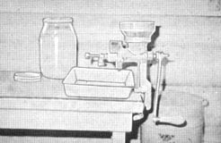
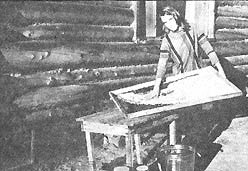

HOW I FEED MY TRIBE OF FIVE A
"STICK-TO-YOUR-RIBS" BREAKFAST FOR
LESS THAN A HALF-PENNY EACH
A steaming bowl of cracked wheat cereal, swimming in milk and topped with brown sugar is a regular chill-chaser in our British Columbia wilderness cabin and this morning - as I began to clear the breakfast table - I found myself wondering why so few people know the secrets of eating like a king on pennies. Wheat (whole wheat, that is) is one of those secrets.
"In an emergency, a person can live indefinitely on whole wheat and tomato juice alone," said a speaker at a Civil Defense meeting I once attended while still living in the city. He added that, in a real pinch, water could be substituted for the tomato juice . . . leaving only the wheat which contains calcium, iron and at least two essential vitamins-B Complex and E-among other nutrients. There's no question, then, that the grain is good for you . . . but is it also inexpensive? Darn right. Matter of fact, it's downright cheap!
I recently bought-direct from a farmer-cleaned wheat for $1.50 a bushel. It weighed out 60 pounds per bushel which means that each pound cost 2-1 /2 cents. That figures to less than 1/4 cents a serving for cereal since a pound of wheat-cracked-makes more than ten hearty bowls of breakfast food.
Add a quart of milk from our cow and a little sugar or honey and we have some mighty good eating for less than a half-penny each. If you don't have the cow you can still hold your out-of-pocket breakfast costs to our level (and maybe cut it slightly below that) by substituting canned or powdered skim milk for our whole milk. And if your pocketbook is rubbing sides in the middle forget the milk entirely and top your hot cracked wheat with a little brown sugar and a spoonful of margarine or butter. I often eat mine that way by choice.
Whole wheat flour for cooking and baking is just as inexpensive as cracked wheat for cereal and all you need to turn pounds or bushels of wheat into either is an adjustable hand grain mill. I got mine from Smithfield Implement Co., Smithfield, Utah 84335. MOTHER handles the same machine. It sells, postpaid in the continental United States and Canada, for between $11.00 and $13.00. Mine was somewhat more because of the import duty charged by the Canadian government.
These Corona mills are heavily constructed and should last a long time. With wheat and the mills to grind it costing so little, why does anyone in Canada or the U.S. need to go to bed hungry? Several families could even share a mill if the initial investment was a problem.
Folks certainly can't be holding back because the home mills have a limited utility. I've made everything from cracked wheat cereal to a delightful angel food cake with wheat run through mine and here's a few recipes:
If you want hot cereal for breakfast, put 1-1/2 cups cracked wheat, 5 cups warm water and 1-1/2 teaspoons of salt into a large, heavy pan the evening before. Let this set overnight and your cereal will be softer and will cook more quickly. In the morning, stir it well and put the pan on the stove. Bring the mixture to a boil, stirring frequently. Turn the heat down or slide the pan to the back of your cookstove and simmer the wheat for about 30 minutes. Stir often. It will be quite thick when done.
We enjoy this cracked wheat cereal cold too, especially in the summer. Often I soak the wheat in the morning and cook it in the evening. When it has cooled, I put the cooked wheat into a glass container for storage in a cool place. You can keep it in your refrigerator if you have one.
Try adding a cup of this left over cereal, a little minced onion and an egg to one pound of hamburger. Season to taste with salt, pepper and a pinch of sweet basil, It's a tasty way to add mileage to hamburger patties. Or use the cooked cereal in place of some of the bread crumbs in your next meat loaf. You'll be pleased with the flavor lift it gives.
If you'd rather bake with your wheat instead of make porridge you can soak three cups of the cracked grain overnight in two cups of warm water. Add this to your favorite four-loaf bread recipe in place of the first three cups of flour and two cups of water that it calls for. The nutty flavor is sure to make a hit with your family and mark your start toward the use of more whole wheat.
If, for some reason, you can't buy wheat direct from a farmer, look in the classified section of your telephone directory for feed stores. If that fails, there's always the natural food merchants . . . and if you can't find one of them you can occasionally locate small boxes of whole wheat hidden away on a supermarket shelf. Farmers and feed stores offer the best prices, as you might have suspected.
Always specify that you want fresh, wholesome grain for human consumption. You do not want seed wheat or wheat that has been treated with chemicals or pesticides in any other way. If possible, buy wheat that has been cleaned. It is well worth the few extra cents.
In the event that you could not-or did not-buy cleaned wheat, you can clean the grain yourself. Make a rectangular frame as large as you can easily handle from 1" X 2" board. Staple a piece of good wire door screening across this and you have a sieve with which to screen the kernels. Pour some wheat on the screen and shake it about to remove the dust. Pick out any foreign material and grit by hand. If you can do this outside on a windy day, so much the better for the chaff will blow away as you pour the wheat onto the screen.
If you want to wash the grain, pour about a gallon at a tune into a bucket of clear water. Swirl the wheat around, drain off the water and thinly spread the kernels in a flat pan or on a nylon net screen that has been tacked to a frame in the same manner as your cleaning screen. Let the wheat dry thoroughly.
Store the cleaned grain in a cool dry place in large containers. I prefer to use gallon glass jars that may be purchased from cafes or drive-ins for a few cents each. Each jar holds about 6-1 /4 pounds of wheat which is approximately what our family uses in a week.
Generally I grind the gallon of kernels into cracked wheat for cereal or bread. If I find that I want some fine whole wheat flour, I adjust my mill and run the grain through once or twice more. It's always best to grind only what can be used in a week's time or the ground grain will lose both flavor and vitamins.
Uncracked wheat kernels do not have this failing and wheat with a moisture content of less than 10% will keep indefinitely if it is stored properly.
If you keep wheat for a year or more it should be aerated approximately once every six months. Pour the grain into large, clean, fairly flat boxes and let it set a few hours. Stir it once or twice during this period, pour it back into the same containers and again store them in a cool dry place. As you buy more wheat, date each jar with a marking pen so that you'll use the oldest grain first.
It has been estimated that a child consumes 70 pounds and an adult 300 pounds of wheat in bread, cereal and other baked goods every year. If stored wheat were to be your principle diet in an emergency, of course, these amounts would not be enough to last a year. At any rate, a few hundred pounds of wheat (no more than, say, five or ten bushels) stored in the home might be cheap insurance against local or national disaster . . . or just against going hungry in leaner times.
Naturally, we hope those disasters never come . . . but it's nice to know that our stash of wheat and Corona mill will allow us to handle them if they do. It's also satisfying to think that our family enjoys more robust health by substituting whole grains for the refined, bleached, devitalized white flour eaten by so many of our fellow citizens these days. And best of all, in some ways, is the delicious feeling of frugality we notice every time we smack our lips over one of those heaping half-cent bowls of hot cereal.
There's no doubt about it: We've got dollars-and- cents proof that good nutrition doesn't cost . . . it saves!
|
 |
 |
|